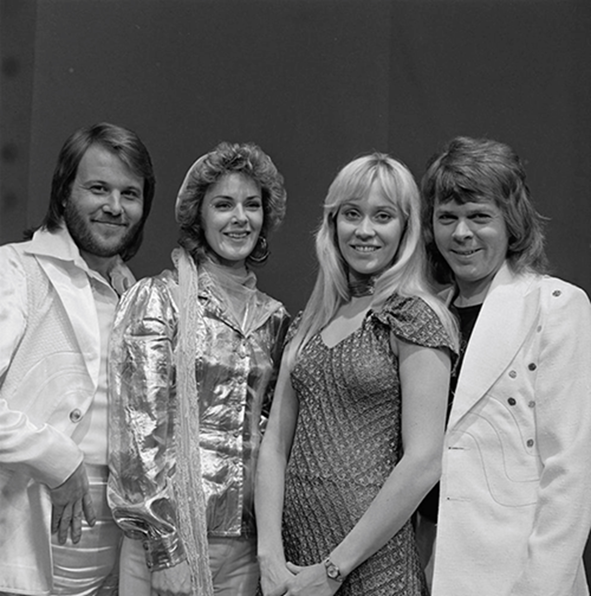
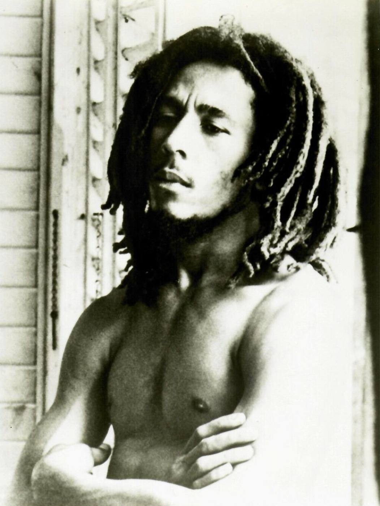
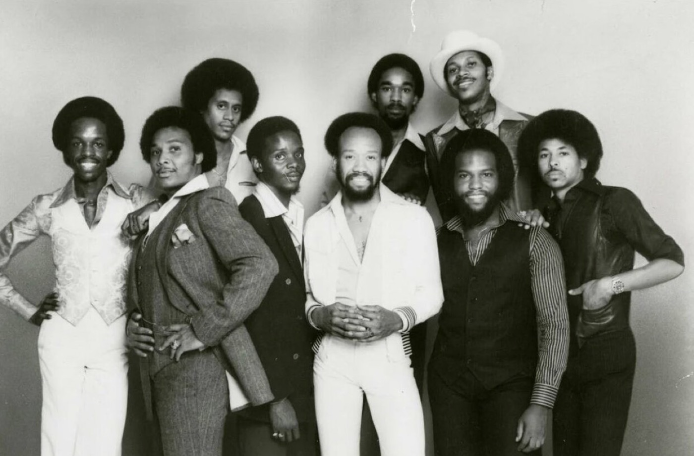

EXPLORE
Seven ways into the 70s.
Choose a style, meet an artist and play a song. Search above if you have a name in mind.

ABBA at TopPop, 1974. Photo:
AVRO
,
CC BY 3.0
.
POP
ABBA
Start with Waterloo, the song behind ABBA's 1974 Eurovision win. Then try Dancing Queen and read about how it was recorded.
Dancing Queen · 1976
Pop vocals over a disco beat. Start with this if you know the chorus but not much about ABBA.
Watch on YouTube
More about the music
Try comparing the strong chorus in Waterloo with the dance rhythm of Dancing Queen.
Written by Benny Andersson, Bjorn Ulvaeus and Stig Anderson.
About the song
.
The official video is played from YouTube and belongs to its owners.
GLAM ROCK
David Bowie
Explore Bowie's music and stage style. His Rock Hall profile is a useful place to start if you are new to his work.
Starman · 1972
A good place to start with Bowie's Ziggy Stardust period. Listen for the change as the chorus begins.
Watch on YouTube
More about the music
Look at how the performance and clothing support the music. The source below gives more background.
Written by David Bowie.
About the song
.
The official video is played from YouTube and belongs to its owners.
DISCO
Donna Summer
Try I Feel Love. It entered the UK chart in July 1977 and is a starting point for this disco section.
I Feel Love · 1977
Summer's vocals sit over a repeating synth line. The song is from 1977; this official animated video came later.
Watch on YouTube
More about the music
Listen to the repeating electronic beat and how the voice fits around it.
Written by Donna Summer, Giorgio Moroder and Pete Bellotte.
About the song
.
The official video is played from YouTube and belongs to its owners.
ROCK
Fleetwood Mac
Try Dreams for a quieter rock sound. It came from the 1977 album Rumours.
Dreams · 1977
A steady drumbeat, soft guitar and Stevie Nicks' lead vocal make this a calm place to start.
Watch on YouTube
More about the music
Listen for how the repeating beat gives the song space, rather than making it feel busy.
Written by Stevie Nicks. The official video is played from YouTube and belongs to its owners.
PUNK
The Clash
London Calling is a louder choice from 1979, with a fast bass line and a more urgent vocal style.
London Calling · 1979
This is a good contrast with the smoother pop and disco songs on the page.
Watch on YouTube
More about the music
Listen to the bass and drums first, then notice how the vocal is more direct than the other songs here.
Written by Joe Strummer and Mick Jones. The official video is played from YouTube and belongs to its owners.

Bob Marley, 1977. Photo: Kim Gottlieb, public domain.
REGGAE
Bob Marley and the Wailers
Three Little Birds is a relaxed reggae choice from the 1977 album Exodus.
Three Little Birds · 1977
Listen for the off-beat guitar and the backing voices joining the main line.
Watch on YouTube
More about the music
The rhythm leaves space between the beats. Compare this feel with the continuous disco beat in I Feel Love.
Written by Bob Marley. The official video is played from YouTube and belongs to its owners.

Earth, Wind and Fire, 1970s. Photo: Columbia Records, public domain.
FUNK AND SOUL
Earth, Wind and Fire
September adds bright brass and funk rhythms to the selection.
September · 1978
Start here if you want a song with a strong rhythm section, horns and group vocals.
Watch on YouTube
More about the music
Listen for the brass parts answering the vocal. The rhythm is closely linked to funk, but the song also has a pop chorus.
Written by Maurice White, Al McKay and Allee Willis. The official video is played from YouTube and belongs to its owners.